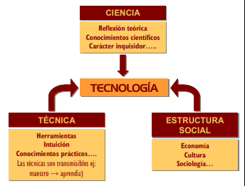

1. Introducción.
El término Técnica hace referencia a todas y cada una de las acciones intencionadas y eficientes que tienen por objeto transformar el medio en beneficio del Hombre.
La palabra Ciencia nos remite al discurso sobre el ser de los hechos y las cosas en busca de su por qué. El objetivo de la ciencia es determinar la razón última de lo que sucede.
La irrupción de la Ciencia en la Técnica ha dado lugar a lo que conocemos en la actualidad como Tecnología, es decir, el producto de una actividad de síntesis entre los conocimientos científicos y los procesos técnicos.
El Hombre aprende a cubrir las necesidades básicas que permiten su supervivencia adaptando el medio ambiente a sus necesidades por medio de la técnica, no como hacen los animales, que se adaptan al medio.
La tecnología de cada época se basa en el nivel de conocimiento científico y técnico alcanzado hasta entonces, con la salvedad de que los avances científicos no tienen por qué traducirse en avances técnicos y tecnológicos instantáneos; de hecho, pueden pasar años, incluso siglos, antes de que la Humanidad pueda utilizar y aprovechar un determinado descubrimiento científico.
Existen dos vías principales de desarrollo tecnológico:
- Solución de un problema o necesidad nuevo mediante recetas o procedimientos de acción o la creación (invento) de artefactos (útiles, ingenios, máquinas). A partir de este momento, dicho artefacto o procedimiento puede considerarse una técnica (ya se tiene la solución del problema).
- Mejora de un procedimiento o artefacto, que se convierten, de esta forma, en un nuevo problema tecnológico, y así sucesivamente, cada vez que se desee perfeccionarlos.

Así pues, hablar del desarrollo histórico de la Tecnología no equivale a hablar sobre los descubrimientos científicos, sino sobre la solución dada a problemas que, en la mayoría de las ocasiones, adoptan la forma de inventos, así como sobre las personas que los ingeniaron.
Obra publicada con Licencia Creative Commons Reconocimiento No comercial Compartir igual 4.0